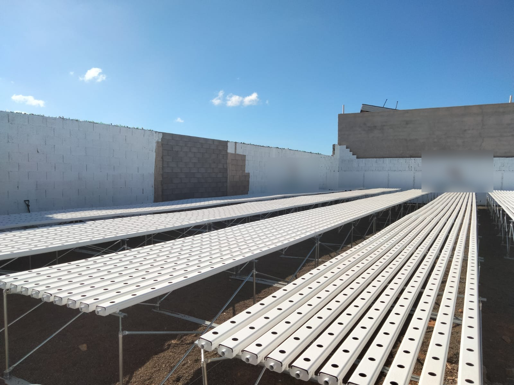
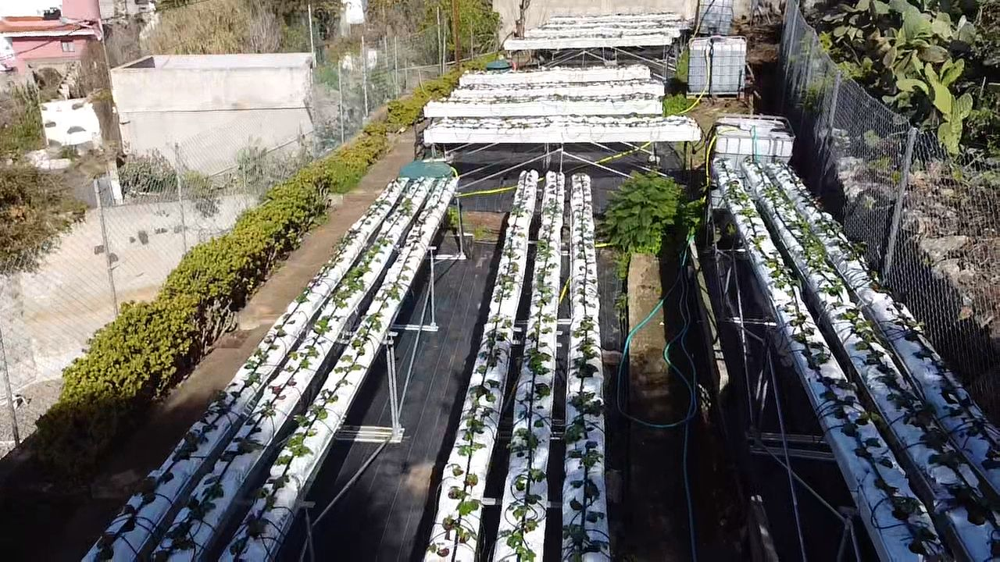
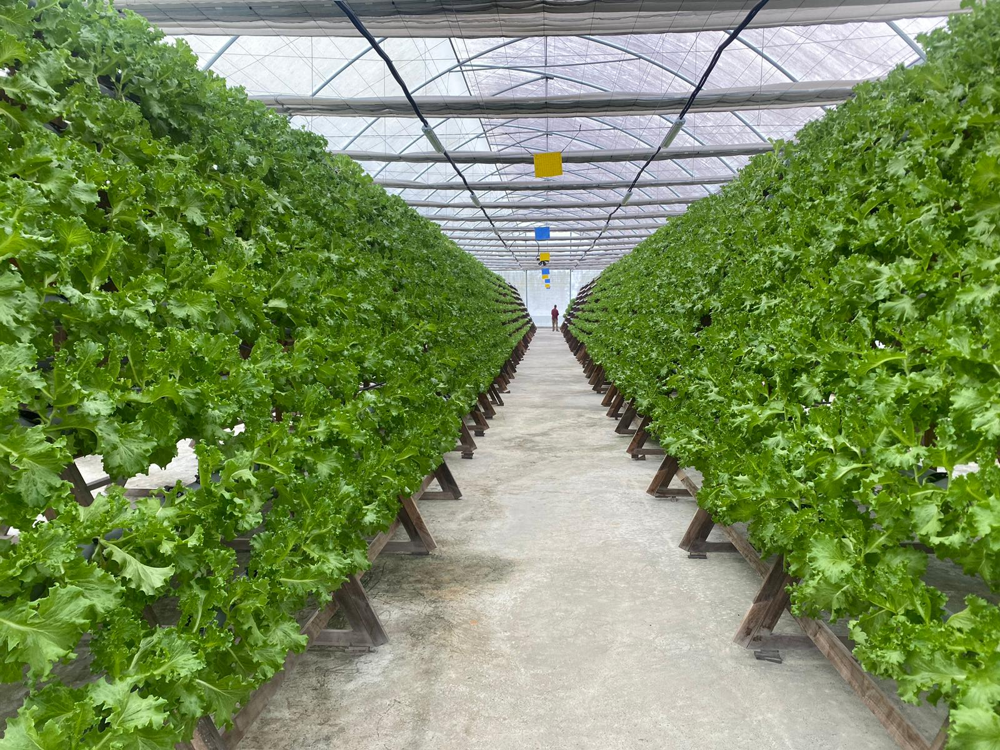

Hidroponía NFT · Islas Canarias
Cultivamos verdura canaria de verdad — sin barco, sin cámaras de semanas — y montamos el sistema a quien quiera cultivarla. Del campo a la tienda y a la mesa.
FASE 01 — La gota
En un circuito NFT el agua no se gasta: circula. Una lámina de 2–3 mm recorre los canales, la raíz toma lo que necesita y el resto vuelve al depósito para empezar de nuevo. Por eso producimos todo el año con una fracción del agua — en las islas, eso no es un detalle.
CÓMO TRABAJAMOS — SIN GRAN INVERSIÓN INICIAL
No vendemos tubos: entregamos un sistema produciendo y nos quedamos a tu lado. El montaje se cobra a precio reducido y el resto va en una cuota mensual que incluye mantenimiento, asesoramiento agronómico y gestión de la producción.
Visitamos tu finca, medimos agua y microclima, y te damos números reales de inversión, producción y plazos. Sin compromiso.
Ingeniería, instalación y puesta en marcha con contrato y acta de finalización. Tú pones el suelo; nosotros, el sistema.
Mantenimiento, gestión agronómica y soporte continuo por una cuota mensual (mínimo 24 meses). Tu cultivo nunca se queda solo.
+ TRAMITAMOS CONTIGO LAS SUBVENCIONES AGRARIAS DISPONIBLES
FASE 02 — La hoja
Alisio Hydro estudia tu finca y tu microclima, instala el sistema NFT llave en mano y te enseña a operarlo. Con telemetría, mantenimiento y ayuda con las subvenciones agrarias.
Verde Volcán suministra hoja verde, tomate y fresa con volumen constante y trazabilidad por lote. Sin depender del barco ni de la península: cosecha programada cada semana, también en invierno.
Para distribuidores de fruta y verdura, hoteles y grupos de restauración que quieren ofrecer producto de la tierra con historia demostrable: de la lámina de agua a la mesa en el mismo día.
EL SELLO QUE LO CUENTA TODO
Cada lote de Verde Volcán sale del invernadero con su etiqueta de origen: qué es, dónde se cultivó, cuándo se cosechó y cuántos kilómetros ha recorrido. El "producto local" deja de ser una promesa de cartel y pasa a ser un dato que tu cliente puede leer.
Para supermercados y distribuidores, eso significa diferenciación real en el lineal. Para restaurantes y hoteles, una historia que se puede contar en la carta sin exagerar ni una coma.
ETIQUETA PROPIA DE ORIGEN — COMPATIBLE CON LOS SELLOS OFICIALES DE PRODUCTO CANARIOPRUEBA REAL — SIN RENDERS

NFT exterior de gran escala con estructura galvanizada, recién puesto en marcha para un productor local.

NFT exterior aprovechando la altitud y humedad del norte de Gran Canaria. Sin invernadero.

Cosecha comercial semanal desde 2023, con eléctrica autónoma. Gestionado desde Canarias.
FASE 03 — EL VOLCÁN
Elige tu camino y te respondemos con números de instalaciones reales, no de catálogo.
CONTACTO TÉCNICO — Néstor Rodríguez Santana · Ingeniero Técnico Agrícola · NEROSA Hidroponía
+34 686 35 20 00 · nerosa.ingenieria@gmail.com · Islas Canarias